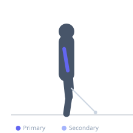

Exercise guide / Single-Arm Tricep Pushdown
Single-Arm Tricep Pushdown
The single-arm tricep pushdown is a unilateral cable isolation exercise for the triceps. Training one arm at a time allows independent focus on each triceps, eliminates strength imbalances, and enables a greater range of motion with wrist rotation at the bottom for a more complete tricep contraction. The lateral and medial heads are most active, with the long head contributing based on the grip angle used.
Primary muscles
triceps lateral head
triceps medial head
Secondary muscles
triceps long head
Stabilizers
transverse abdominis
Equipment
Cable Machine (High Pulley)
Optional
Cable Machine (Dual Pulley / Functional Trainer)


Starting position
- Attach a single handle to the high pulley of a cable machine. Stand facing the machine, holding the handle in one hand with the elbow bent at 90 degrees and tucked at the side.
Setup
- Set cable to high pulley. Attach a D-ring single handle. Stand close enough to the machine so there is tension on the cable with the elbow at 90 degrees.
Steps
- Step 1: Hold the single handle with one hand, elbow tucked at the side at 90 degrees.
- Step 2: Keep the upper arm stationary throughout — only the forearm moves.
- Step 3: Exhale and push the handle downward by extending the elbow until the arm is fully straight.
- Step 4: Hold the lockout, then inhale and return the forearm to 90 degrees.
Coaching cues
- Elbow stays glued to your side — it is the pivot point
- Straighten all the way — do not stop short of full lockout
Breathing
- Exhale on extension; inhale on return.
Range of motion
- Full extension at the bottom; return to 90-degree elbow bend at the top.
Tempo
- 2-1-2-0
Common mistakes
- Letting the elbow drift forward or away from the side during the push
- Rotating the torso toward the working arm
Safety
- Keep the wrist in a neutral position — do not flex the wrist at the bottom
Training
- hypertrophy: 10–20 reps
- endurance: 15–25 reps
- hypertrophy: 3–4 sets
- endurance: 2–3 sets
- Rest: {'hypertrophy': 60, 'endurance': 45}